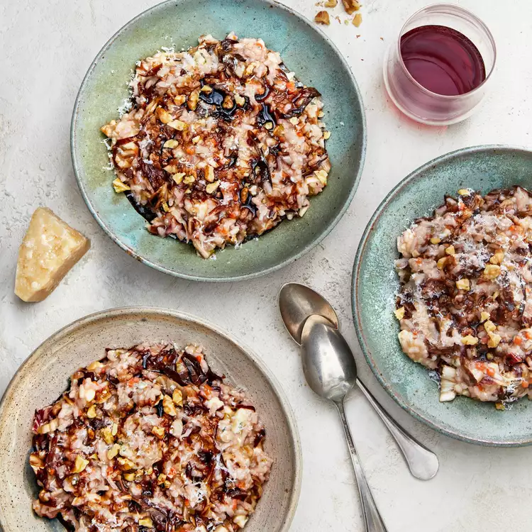

Risotto Con Radicchio, Gorgonzola, Noci, e Crema di Balsamico Recipe

Description
This is a true Italian winter favorite. The flavor and texture combination is enjoyable due to the tangy flavor of the Gorgonzola, sweetness of the walnuts, and the slight bitterness of the radicchio. The balsamic glaze simply takes it over the top! Buon appetito! This is excellent served with salmon.
Ingredients
- 1 quart vegetable stock, or as needed
- ¼ cup olive oil, divided
- ½ medium carrot, minced
- ½ stalk celery, minced
- 2 tablespoons minced onion
- ¾ cup Arborio rice
- 2 tablespoons red wine
- 1 head radicchio, thinly sliced
- 3 ounces Gorgonzola cheese, cut into cubes
- ⅓ cup chopped walnuts
- 2 tablespoons balsamic glaze (reduced balsamic vinegar)
- 2 tablespoons grated Parmigiano-Reggiano cheese (Optional)
Steps
- Bring vegetable stock to a boil in a saucepan; reduce heat to low and keep simmering.
- Heat 2 tablespoons olive oil in a stockpot over medium heat; cook and stir carrot, celery, and onion until onion is translucent, about 2 minutes. Add remaining 2 tablespoons olive oil; stir in rice. Cook and stir until rice is coated with oil and warm, 1 to 2 minutes. Pour in red wine and stir until rice is coated and wine is absorbed, 2 to 3 minutes.
- Pour 1 ladleful of warm vegetable stock into the rice mixture; cook, stirring continuously, until stock is absorbed, 2 to 3 minutes. Continue adding stock, 1 ladleful at a time, cooking and stirring after each addition until liquid is absorbed and risotto is easily broken when chewed, 10 to 15 minutes.
- Stir radicchio, Gorgonzola cheese, and walnuts into risotto until cheese is completely melted, 2 to 3 minutes. Add more stock and cook until risotto is tender yet firm to the bite, about 5 minutes more. Remove from heat and cover stockpot for 1 minute.
- Spoon risotto onto plates and top with balsamic glaze and Parmigiano-Reggiano.